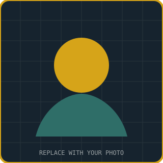

Agile & Scrum Methodologies
Open to Business Analyst / Data Analyst roles & freelance work — usually replies within a day
Business Analyst · Data Analyst
Turning messy requirements into dashboards that ship.
Requirements & Process Improvement Specialist — Lucknow, India
4+ years turning stakeholder needs into clear specs (BRD, SRS, FRS, user stories) and working data into dashboards people actually use — across Power BI, Tableau, SQL, and Google Apps Script automation.

Shefali Dixit
Business Analyst · Data Analyst
4+ yrsExperience
5Organizations
8Featured Projects
60%Avg. Effort Saved
Worked with
Nathji Agencies
Space Wings
Mirc
Workassist
Oasys Cybernetic
About
Bridging the gap between business needs and technical delivery
I work between stakeholders and engineering teams — gathering requirements, mapping current vs. future-state processes, and turning that into documentation and dashboards teams can act on. Recent work spans production dashboards, order management systems, and vendor payment tracking, built with Google Apps Script, SQL, Power BI, and Tableau.
- 4+ years across service-based and product-based organizations
- Requirement gathering: BRD, SRS, FRS, user stories, use cases
- Agile & Scrum delivery with JIRA, Confluence, Trello, ClickUp
- UAT management, functional testing, defect tracking
How I Work
A repeatable delivery process
Gather
Stakeholder interviews, current-state mapping, gap analysis.
Document
BRD / SRS / FRS, user stories, acceptance criteria.
Build
Dashboards, workflows, and automation with the dev team.
Validate
UAT cycles, defect tracking, stakeholder sign-off.
Skills
Toolkit
Grouped the way I actually use them — from requirement docs through to shipped dashboards.
Business Analysis
Data & Analytics
Design & UX
Testing & QA
Project Management
Programming & Automation
Experience
Where I've worked
A quick timeline — full detail lives in the résumé section below.
Data Analyst
Mar 2026 – PresentNathji Agencies Pvt Ltd · Lucknow, India
- Built interactive Power BI and Tableau dashboards for stakeholder decision-making
- Applied data storytelling across Power BI, Tableau, and Google Data Studio
- Managed IT SLAs, technical documentation, and asset inventory
Purchasing Analyst
Nov 2025 – Feb 2026Space Wings · Lucknow, India
- Ran supplier evaluations, lifting supply chain reliability by 20%
- Applied forecasting to optimize inventory and reduce carrying costs
- Implemented a vendor onboarding and performance-monitoring system
Data Analyst
Aug 2023 – Oct 2025Mirc Pvt Ltd · Lucknow, India
- Built dashboards and visualizations for key stakeholders
- Co-designed data collection and analysis systems with engineering
- Owned system performance monitoring and technical documentation
Business Analyst
Jun 2023 – Jul 2024Workassist · Remote
- Translated stakeholder requirements into specs for IT teams, cutting rework
- Tracked milestones and budgets across concurrent initiatives
- Ran UAT cycles and gap analysis between current- and future-state ops
Business Analyst
Nov 2020 – May 2023Oasys Cybernetic Pvt Ltd · Lucknow, India
- Authored technical design documentation for reporting solutions
- Converted user needs into IT tasks using Excel and SQL analysis
Recruiter
Nov 2018 – Jun 2020Bundle Technology Pvt Ltd · Lucknow, India
- Sourced, screened, and interviewed candidates across roles
- Managed end-to-end recruitment coordination via HRMS software
Résumé
Full résumé
Structured summary below — or open the PDF for the complete version.
Shefali Dixit
Open Résumé (PDF) ↗
Business Analyst · Data Analyst · Lucknow, Uttar Pradesh, India
Certifications
Business Analysis Fundamentals
SQL & Data Analytics with Excel
Education
Bachelor of Technology
Diploma
Key Achievements
Faster requirement clarity
Faster stakeholder sign-off
Stronger cross-functional collaboration
Projects
Selected work
Swap the thumbnails and links below with real screenshots and case studies as you add them.
Contact
Let's talk
Open to Business Analyst / Data Analyst roles and freelance dashboard or process-improvement work.
- dixit.shefali123@gmail.com
- +91-98891 64552
- inlinkedin.com/in/shefali-dixit425b44203
- Lucknow, Uttar Pradesh, India